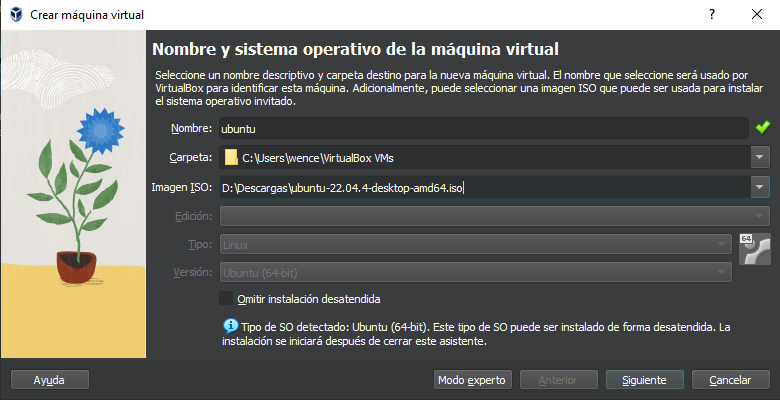
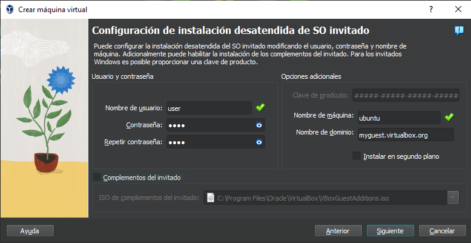
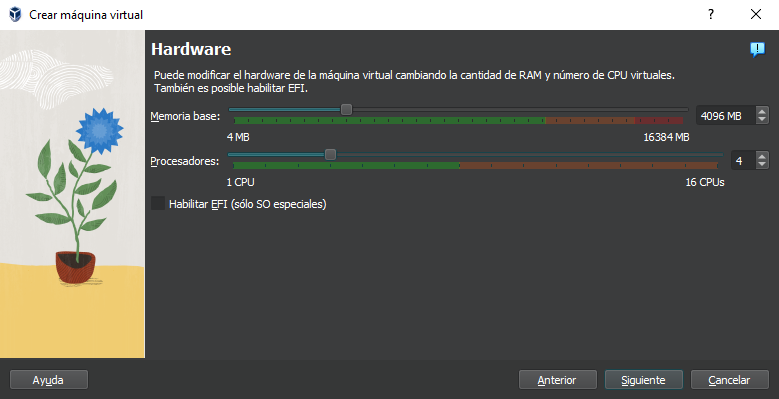
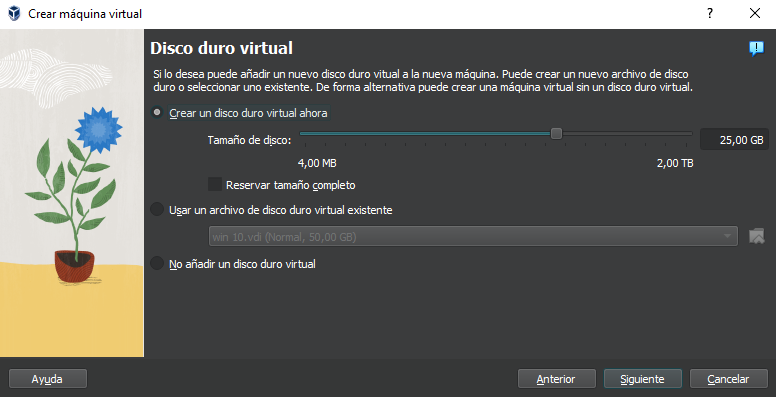

Paso 1: Descarga de ISOs y programas
Ubuntu
Ubuntu es una distribución GNU/Linux basada en Debian GNU/Linux, que incluye principalmente software libre y de código abierto.
Descarga aquí
Windows 10
Windows 10 es un sistema operativo desarrollado por Microsoft como parte de la familia de sistemas operativos Windows NT.
Descarga aquí
VirtualBox
Oracle VM VirtualBox es un software de virtualización para arquitecturas x86/amd64.
Descarga aquíDescargamos el programa y los sistemas operativos detallados anteriormente(VirtualBox, Windows 10 y Ubuntu).
Paso 2: Instalación y configuración
Entramos en virtualbox y le damos a nueva, seguimos los siguientes pasos y le damos a siguiente

Ponemos el nombre de usuario y la contraseña y le damos a siguiente.

Cambiamos la memoria a lo se ajuste nuestro ordenador igual que los procesadores y le damos a siguiente.

Dejamos el tamaño que nos da por defecto y le damos a siguiente y después a terminar.

Paso 3: Configuración Samba
Esta es la explicación de la configuración de Samba.